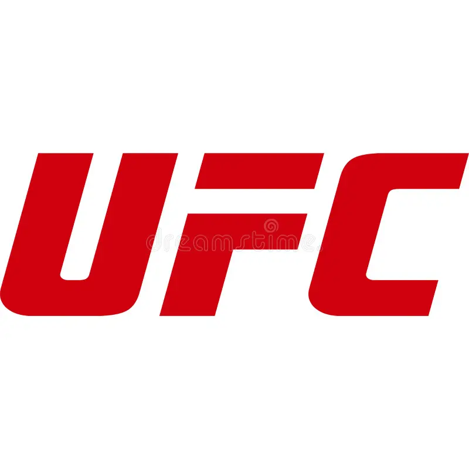
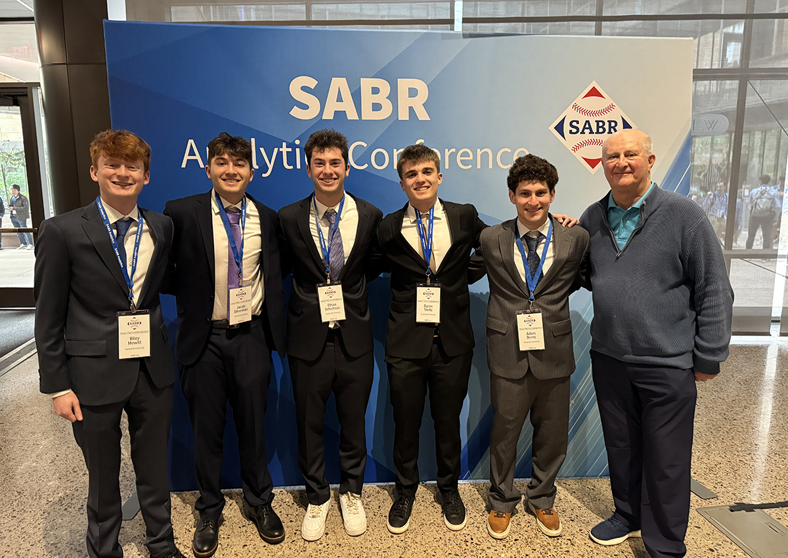

Contact Me
I am always open to discussing new opportunities!
Email:
Jacob.s.silverman@vanderbilt.edu
Number:
+1 (516) 288-6223

Location:
New York, USA
ESPN — Incoming Programming Intern, Summer 2026
Conducting ratings research and analysis across linear and digital
platforms. Developing presentations and communicating programming
initiatives across ESPN departments. Assisting with the planning and
scheduling of college and professional sporting events across
broadcast and streaming properties.
Tools: Excel, Python

UFC — Data Science Intern, Summer 2025
Analyzed user behavior and engagement data to support Fight Pass
content strategy. Built dashboards and reports to track key metrics,
identify trends, and provide actionable insights for content
optimization.
Tools: Excel, Python
Vanderbilt Athletics — Data Analytics Intern, 2025 - Present
Built predictive models for baseball and football performance,
attendance, and revenue forecasting.
Tools: Python, R, Excel
Vanderbilt Sports Business and Analytics Club — Co-President, 2025 -
Present
Led a student organization focused on sports analytics, organizing
workshops and industry panels. Helped secure internship
opportunities for students by building relationships with athletics
staff and industry professionals.
Tools: Python, R, Java, Excel

SABR Analytics Conference - placed 1st in our room and 2nd overall in the Diamond Dollars competition. Built predictive models using XGBoost and KNN modeling to analyze player valuation and performance trends.
Saberseminar — presented original research on MLB's most underrated pitch, the splitter. Applied kernel density estimation to model pitch movement distributions and effectiveness across counts, handedness, and game situations.
Email:
Jacob.s.silverman@vanderbilt.edu
Number:
+1 (516) 288-6223
Location:
New York, USA